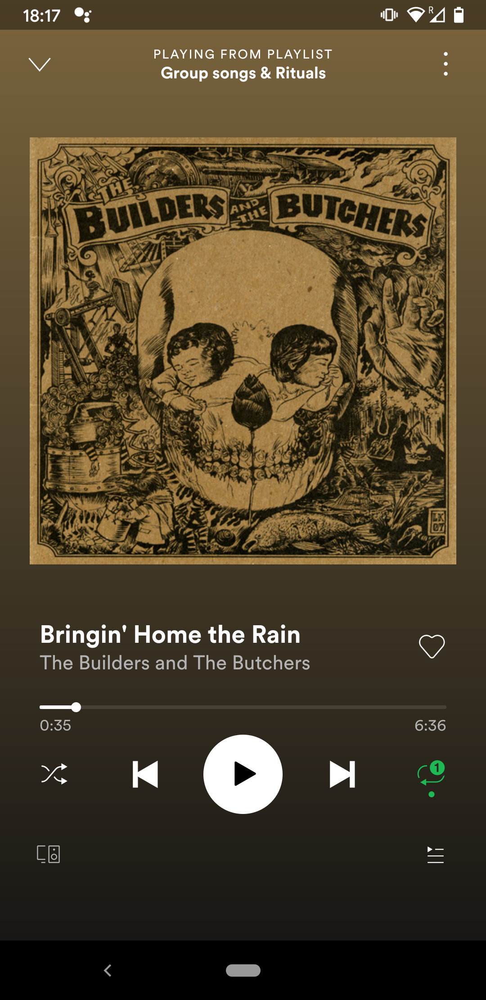
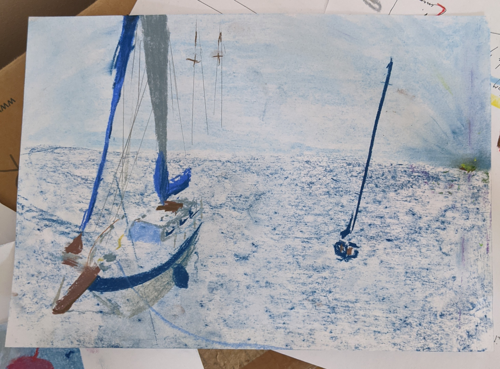
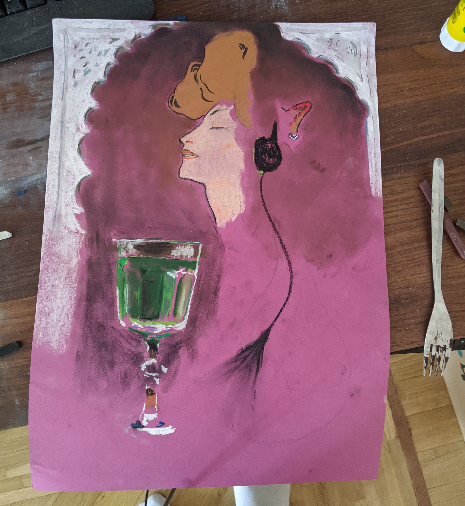
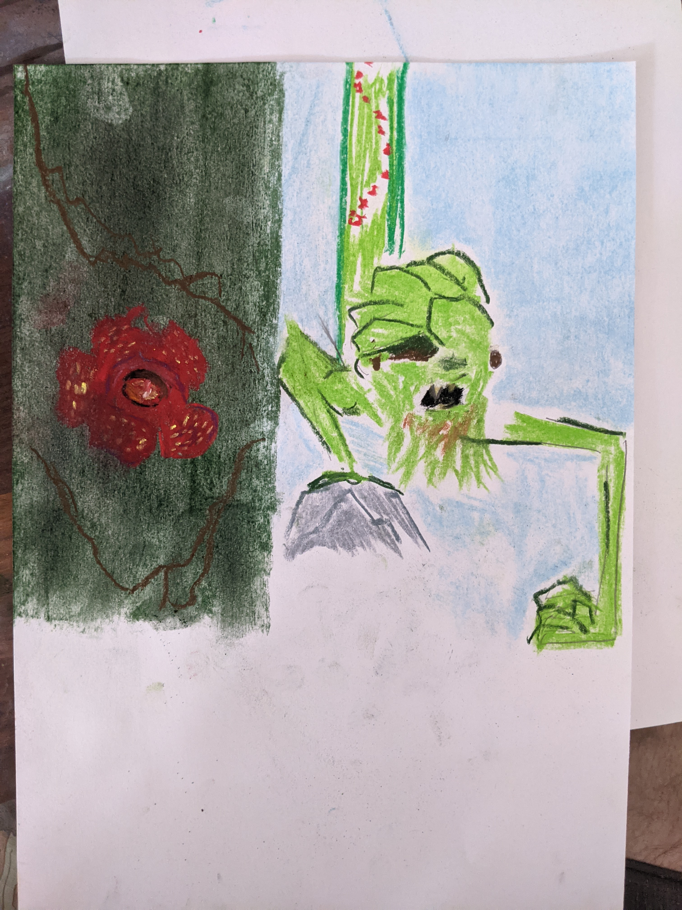
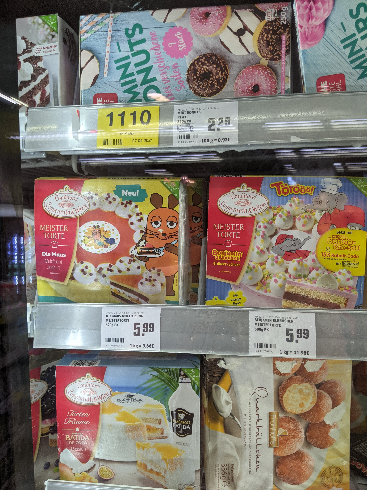

Saturday 26. June 2021
Californication
I wanted to draw a two people together in a car. That feeling of freedom and bonding.
Nothing was like what I planned. The passenger ended up looking like a dreadlocked Chewbacca.
After drawing the purple glasses of the driver I wanted to draw the skin but it ended up looking like a facemask made of human skin.
It felt very poetic even if in a corny kind of way.
I think the car reminded me of low-riders from GTA San Andreas cause I immediately saw the palms from Santa Maria.
I wanted to draw the houses with orange rooftops on a hill but the chalk did not allow for such detail. Then I noticed the orange on the white
looked like a nigiri sushi so I made more. This mishmash triggered a memory of Katy Perry's song
California Girls
.
In honor I drew some whipped-cream and a cherry in the back. The whipped cream looked like a tornado so I added a flying cow next to it (otherwise it wouldn't really be a tornado, would it?). I had to stick a second white
paper with a label to clarify. Now the picture already had a pretty chill mood so I added a beautiful sunset and a LOFI logo on the bottom.
I tried to replicate the Beverly Hills sign on the bottom and added a few sailboats to accentuate the relax of a vacation.

I was tired. I looked down on the drawing that I've made and lost myself in my thoughts.
The image in my eyes suddenly became static or maybe I was just trying not to move my eyes, because the texture
of the blue color started being interpreted by my brain as the material of those cheap hairy carpets
that people put into bathrooms. Suddenly
everything
even outside of the drawing had this exact texture.
Linked-In and the pirate island
Drawing the sailboats was a lot of fun, but it didn't leave me satisfied.
I started a new drawing by splitting the paper with two blues. A darker one for the open sea
and a lighter one for the clear sky.
Around this time I started listening on loop to the song "Bringin' Home the Rain" by
The Builders and The Butchers
.
I could not hold the context of many sentences together to understand the meaning of it all, but periodically I would hear
a word or two and they fell into place like a piece of a puzzle. The song seemed to be have a really deep meaning. It seemed to perfectly describe the struggle of life.
It sounded to me like a mother singing to her baby, preparing it for how hard life is, imagining all of its future.

I first drew the boat on the right. It's the kind of shape people use to depict small sailboats on the horizon. At the time it seemed obvious to me to draw it like this.
Now it looks just like symbol. The one boat was not enough so I searched for a picture of some sailboats.
I found one of a boat parked in a dock. The boat had this wooden tip that I guess a person could stand on? Inexplicably this seemed like the best part to start with.
I drew the wooden tip and then a blue arc that outlined the profile of the body. It felt right even though it very much felt like drawing a person by starting with the button on their shirt.
The rest of the boat followed the same pattern of just drawing whatever I saw as a dominant trait at any given moment.
There were very thin steel lines connecting to the front of the boat, they seemed to hold everything under tension.
I thought they would add a lot detail so I took a pencil to draw them. Once I drew a few of them, something felt off. The lines should have gone straight up to the tip of the mast but instead I drew them in a kind of diagonal upward direction.
Now it felt more like a spider web than what I was going for. I tried to add one vertical line and it felt much better, but it also started to feel crammed.
I then remembered Yoshida's repeating patterns and wondered if I could correct the perception of the direction of the lines by adding the masts of the boats parked behind mine.
I failed to consider that without drawing the rest of the boats they would had this ghost-ship spooky feel.
This combined with the pirate sounding song made think of a pirate island. I drew a small spot of brown on the horizon and I immediately felt the contrast of the two worlds.
One being a ship full of kaki short wearing sons of lawyers. The whole ship colored in Facebook and LinkedIn blues.
And on the other side the energy of the unknown. The place where people don't know what tomorrow is gonna bring. You could feel the energy you feel as you approach a festival.
The island had an aura. It was as if there was a third pole. The purple of magic would be visible for miles away like a beacon in the sky. But just like the magnetic field of earth, it rains on us wherever we are.
It's the inner calling to escape a 9to5 job.

Absinth & Cigs

I found a drawing that I tried to do a few weeks ago sober. It was the face of a girl
from Mucha's JOB poster. I somehow associated it with absinth (maybe the green in the picture?).
I spent a lot of time drawing the green glass. It was suprising to see it look more and more real
even though my perception was still very distorted and I couldn't believe the shape was even remotely correct.
The marble on top was an attempt to replicate the one in Fatima cigarette adds.
The forest creature on my wall
I was tired so I went to lie on my bed. I looked up at the ceiling and saw this weird forest creature protecting something.
I knew I would not be able to capture the beauty of it, but it also felt like by tomorrow I would forget where the creature was on the wall, so I just treid to capture the basic shape of it.
It felt very much like a Bridge to Terabithia kind of creature.

Evening walk
In the evening I went to follow the sunset.
It still feels magical how you see patterns that you normally ignore, especially the subtle ones.
Like the squares drawn by an orange dust fallen from the trees.
